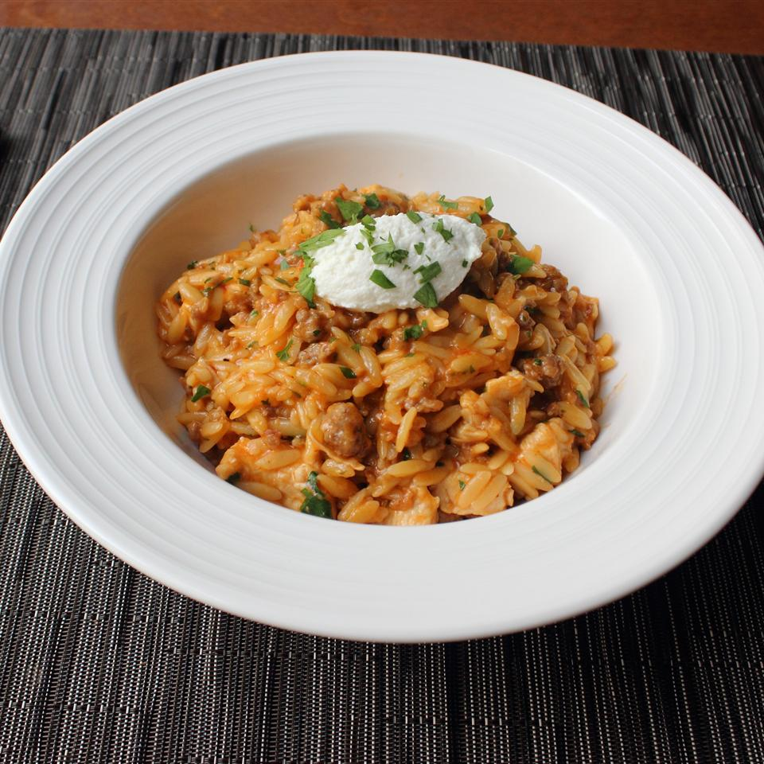

One-Pot Chicken and Sausage Orzo

Description
An easy to make and tasty meal!
Ingredients
- 2 teaspoons olive oil
- 12 ounces spicy Italian sausage, casings removed
- 1 pound boneless, skinless chicken thighs, cut into bite-size pieces
- 1 teaspoon salt, or to taste
- 3 cups chicken broth, plus more as needed
- ½ cup tomato sauce
- 1 ½ cups uncooked orzo (rice-shaped pasta)
- 1 teaspoon kosher salt, or to taste
- ½ cup finely grated Parmigiano-Reggiano
- ¼ cup chopped Italian parsley
- 2 tablespoons sliced fresh chives
- 4 tablespoons ricotta cheese for garnish
Steps
- Place a pot over medium-high heat; add oil. Brown crumbled sausage, breaking up pieces as they cook. Cook and stir until sausage is nicely browned, about 5 minutes. Add chicken pieces. Cook and stir until chicken begins to turn opaque, about 1 minute. Add salt.
- Stir in chicken broth and tomato sauce. Raise heat to high and bring mixture to a simmer. Stir in orzo and a pinch of salt. Reduce heat to medium until pasta is almost tender and most of the liquid is absorbed, 10 to 12 minutes, stirring occasionally to prevent it from sticking to the bottom of the pot. Remove from heat. Add grated cheese, parsley, and chives. Serve topped with a dollop of ricotta cheese.